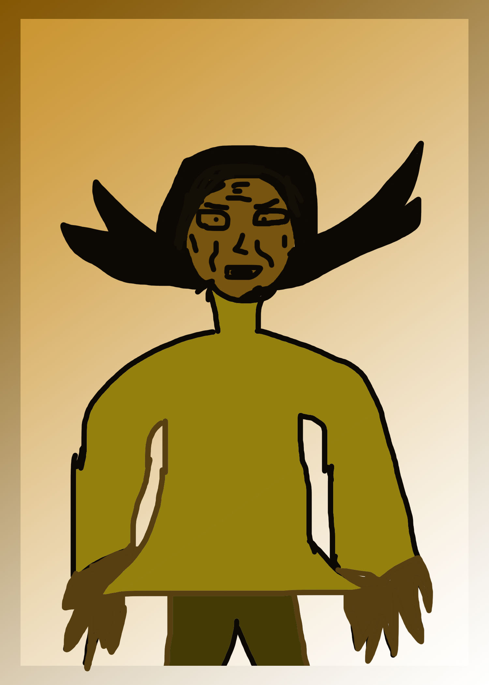
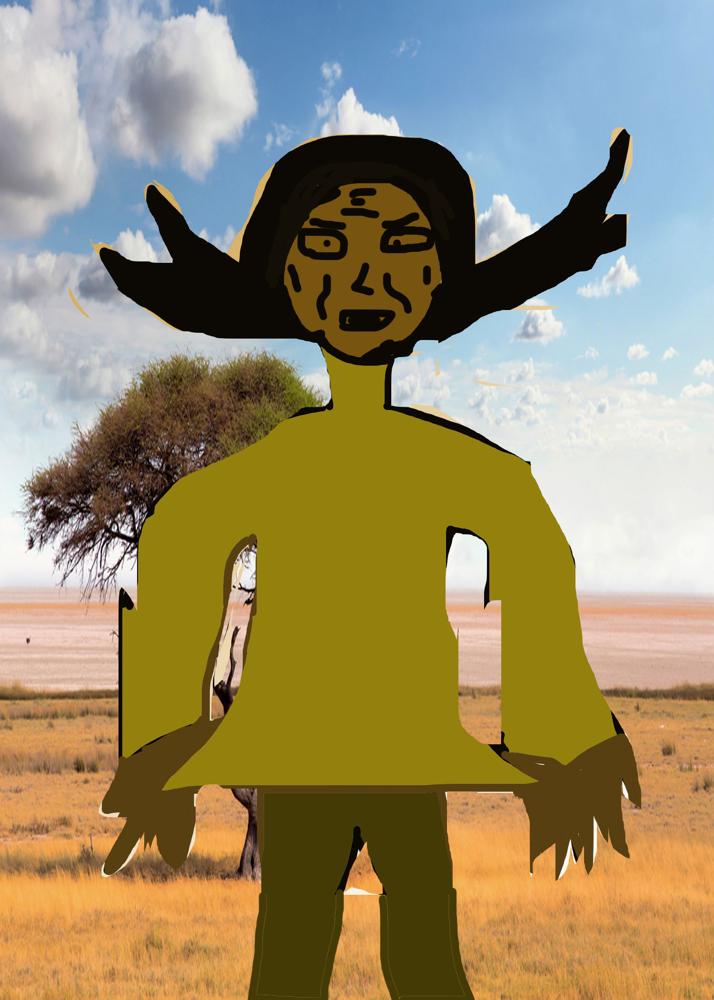

My Wild Seed Portrait


In this Spring 2020 Semester in my Introduction to New Media class, I had done many remarkable things including Wild Seed Portrait and Virtual Landscape as such assignments. But in this paragraph, I will only talk about one thing I did with perseverance. It is the wild seed portrait. Professor Murrell, in this assignment assigned the class to read the first 60 pages of the book, Wild Seed By: Octavia E. Butler and to describe a character in the book. Then, she asks us to use photoshop to draw a portrait regarding this character based on the descriptions. In this assignment, it took me two weeks or 4 class sessions to get it done. Even though reading may be difficult, I still persevered. I read the 60 pages many times and I updated my annotations every time I read the 60 pages. This assignment taught me how to be creative with the characters I describe and it improves my reading skills too.
Back to main page